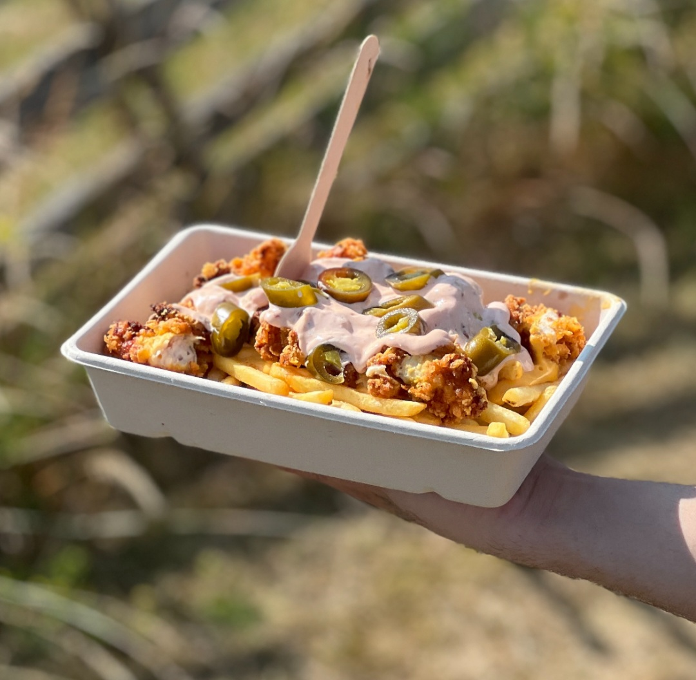

Här hittar du våra populära Friesboxar, tillbehör och drycker.
Vi erbjuder olika Friesboxar med krispiga pommes, toppings, såser och drycker. Menyn är skapad för att ge en snabb och god street food-upplevelse.

Pommes med ost, sås och krispig kyckling.
110 kr
Pommes med stark sås och spicy kyckling.
115 kr
Pommes med färska grönsaker och halloumi.
Välj mellan smältost, aioli eller Friesbox specialsås.
15 kr
Pommes med valfri sås, krispig lök och jalapeño.
45 kr
Välj mellan Coca-Cola, Fanta eller Sprite Zero.
25 kr
här kan ni hämta matdata från ett externt API för att få inspiration.